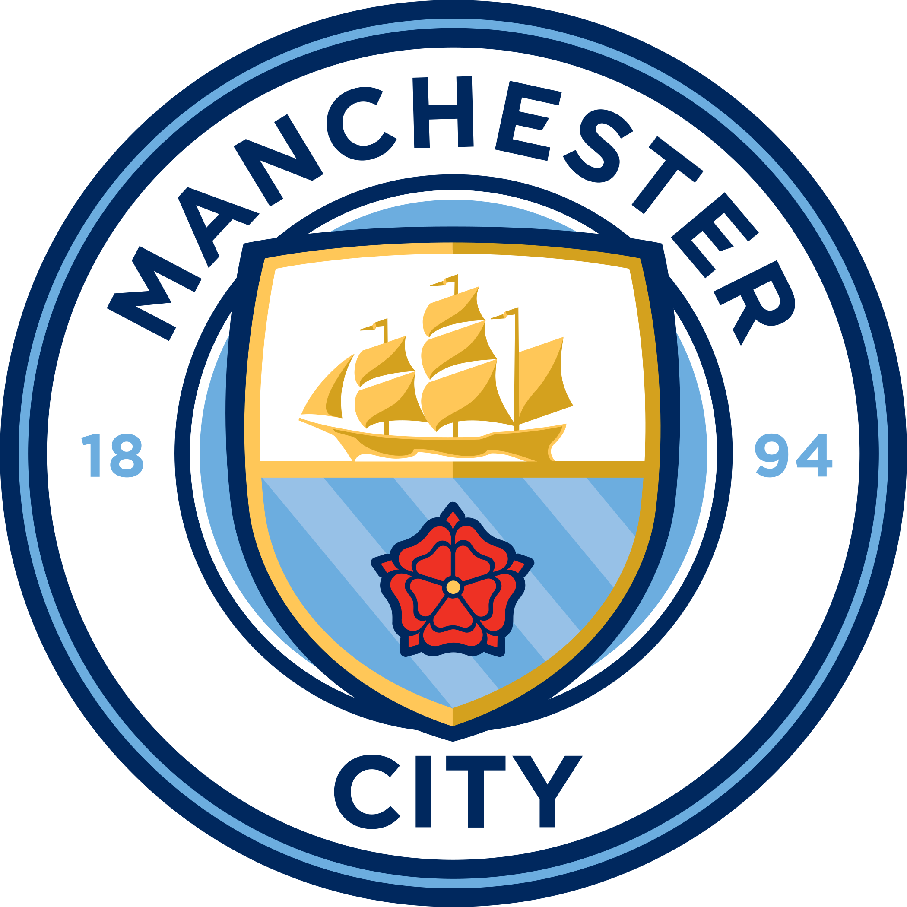

Equipos
Información sobre los principales equipos de fútbol.
Bayern de Múnich
El Bayern de Múnich es uno de los equipos más exitosos de Alemania y Europa. Juega sus partidos de local en el Allianz Arena, ubicado en Múnich, Alemania.

Fútbol Club Barcelona
El Fútbol Club Barcelona, conocido como Barça, es uno de los equipos más emblemáticos del mundo. Juega sus partidos de local en el Camp Nou, ubicado en Barcelona, España.

Real Madrid
El Real Madrid es uno de los clubes más laureados de la historia del fútbol. Juega sus partidos de local en el Estadio Santiago Bernabéu, ubicado en Madrid, España.

Manchester City
El Manchester City Football Club, conocido como Manchester City es un club de fútbol de la ciudad de Mánchester, Inglaterra, que juega en la Premier League, su estadios es el Etihad Stadium, ubicado en Inglaterra.
